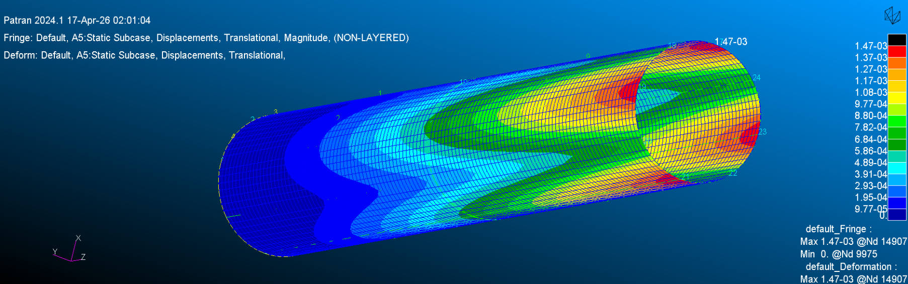

Project overview
A reinforced cylindrical shell with metallic and composite segments was modeled to assess structural displacement, stress, and material efficiency under a spatially varying internal pressure.
Methods
MSC Patran/Nastran finite-element analysis and classical lamination theory were used to compare baseline copper components with aluminum 6061-T6 and alternative composite stacking sequences.
Results
The reported optimized configuration reduced total mass by approximately 69%, maximum displacement by 31.63%, and estimated cost by approximately 60% relative to the baseline design.
Scope and limitations
These are numerical findings for the study's prescribed geometry, loading, and material assumptions; they are not flight qualification results.
Course project. See the linked PDF for full methodology, figures, and findings.